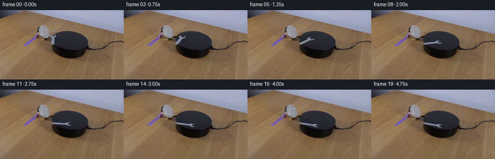
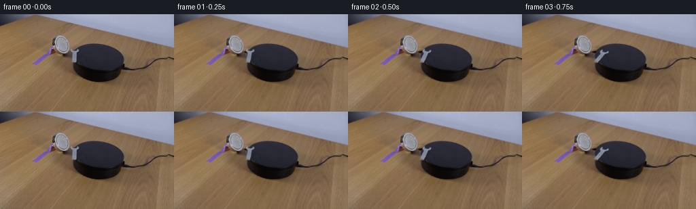
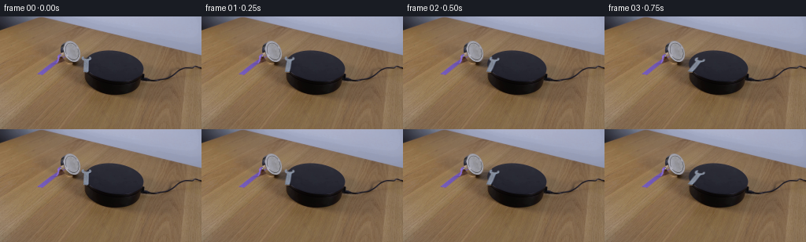
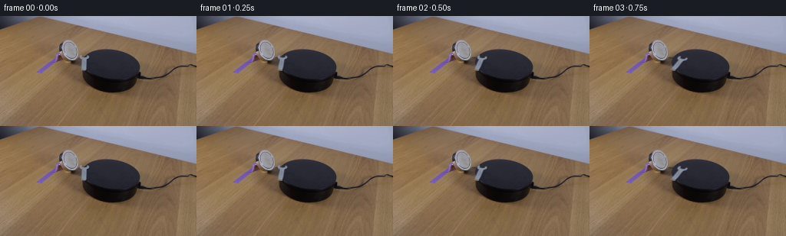

CODING AGENTS AS PIXEL WORLD MODELS
traex/GPT-6.1-Sol · 0102
点击播放 · 原生 RGB 像素
逐轮保存的候选
回放视频、检查图与代码变化。
每份候选均可单独播放。实际图片检查记录在下方工具轨迹中。
候选 01播放与检查图
点击播放 · 原生 RGB 像素


展开代码变化
--- 上一保存版本
+++ 本次保存版本
@@ -0,0 +1,131 @@
+from pathlib import Path
+import numpy as np
+from PIL import Image, ImageDraw
+import cv2
+from scipy.ndimage import gaussian_filter
+import artifact_io
+
+ROOT = Path(__file__).resolve().parent
+
+
+def setup():
+ image = np.asarray(Image.open(ROOT / 'first_frame.png').convert('RGB'), dtype=np.uint8)
+ raw = image.astype(np.float32)
+ h,w = image.shape[:2]
+ yy,xx = np.mgrid[:h,:w].astype(np.float32)
+ # Plane of the round black support, estimated from its unobstructed perimeter.
+ cx,cy,rx,ry,shear = 144.19,63.412,37.051,20.127,.301
+ left = cx + shear*(yy-cy)-rx*np.sqrt(np.clip(1-((yy-cy)/ry)**2,0,1))
+ plane = np.clip(xx-left+.5,0,1)
+ plate = raw.copy()
+ wood = raw.copy()
+ for y in range(50,72):
+ # The wood and the magnet's existing shadow continue behind the tool.
+ xs=np.arange(97,104 if y>=56 else 103)
+ vals=raw[y,xs]
+ for ch in range(3):
+ p=np.polyfit(xs,vals[:,ch],1)
+ wood[y,:,ch]=np.polyval(p,np.arange(w))
+ # A matched sample of the same matte black surface at this depth.
+ surface=np.median(raw[y,123:135],axis=0)
+ noise=(raw[y,122:136]-np.median(raw[y,122:136],axis=0))
+ for x in range(102,119):
+ b=surface + noise[(x-102)%14]*.35
+ plate[y,x] = wood[y,x]*(1-plane[y,x])+b*plane[y,x]
+ # Outline of the two open jaws and the long flat handle.
+ contour=[(104.7,50.6),(105.8,51.1),(106.5,52.1),(106.7,53.5),
+ (108.6,53.65),(109.35,54.05),(110.2,53.9),(112.0,53.75),
+ (112.7,52.3),(113.1,51.3),(114.2,50.85),(115.2,51.45),
+ (115.8,52.5),(115.95,53.65),(115.2,54.65),(113.6,55.6),
+ (112.65,56.4),(112.55,58.0),(112.5,61.0),(112.2,65.0),
+ (111.85,69.3),(111.4,70.25),(110.2,70.65),(107.6,70.6),
+ (106.3,70.2),(105.95,69.5),(106.25,68.8),(106.25,58),
+ (106.2,56.9),(105.55,55.7),(104.1,54.6),(103.55,53.4),
+ (103.7,51.8)]
+ S=8
+ m=Image.new('L',(w*S,h*S))
+ ImageDraw.Draw(m).polygon([(round(x*S),round(y*S)) for x,y in contour], fill=255)
+ geometry=np.asarray(m.resize((w,h),Image.Resampling.LANCZOS),dtype=np.float32)/255
+ geometry=gaussian_filter(geometry,.23)
+ # Recover fractional edge coverage by projecting RGB onto the local metal /
+ # background color line. This removes the warm tabletop fringe from the tool.
+ foreground=np.zeros_like(raw)
+ alpha=np.zeros((h,w),np.float32)
+ for y in range(50,72):
+ if y<=53:
+ target=np.array([129.,138.,156.])
+ elif y>=69:
+ target=np.array([124.,136.,157.])
+ else:
+ target=np.median(raw[y,107:112],axis=0)
+ for x in range(102,118):
+ if geometry[y,x]<.001: continue
+ bg=plate[y,x]
+ d=target-bg
+ a=float(np.dot(raw[y,x]-bg,d)/max(np.dot(d,d),1))
+ # The original photograph contains genuine spatial highlights.
+ # Keep its opaque interior; color-line inference only at boundaries.
+ a=np.clip(a,0,1)
+ if geometry[y,x]>.96 and a>.85:a=1.
+ a=min(a, min(1.,geometry[y,x]*1.7))
+ if a>.035:
+ f=(raw[y,x]-bg*(1-a))/a
+ foreground[y,x]=np.clip(f,[95,102,117],[156,169,187])
+ alpha[y,x]=a
+ # Fill only the vacated silhouette, leaving the rest of the photograph exact.
+ remove=cv2.dilate((alpha>.025).astype(np.uint8),np.ones((3,3),np.uint8)).astype(np.float32)
+ # Do not damage the original rim glint below the handle.
+ remove[71:,112:]=0
+ remove[72:]=0
+ remove=gaussian_filter(remove,.45)
+ clean=raw*(1-remove[:,:,None])+plate*remove[:,:,None]
+ # A tiny remaining handle-tip reflection belongs to the moving tool.
+ clean[71,108:112]=plate[71,108:112]
+ return image,clean,alpha,foreground
+
+
+def generate():
+ image,clean,alpha,foreground=setup()
+ h,w=image.shape[:2]
+ pivot=np.array([109.8,69.8],np.float32)
+ # Camera projection of clockwise rigid motion in the tabletop plane.
+ P=np.array([[1,.1635],[0,.5432]],np.float32)
+ Pinv=np.linalg.inv(P)
+ S=4
+ base=cv2.resize(clean,(w*S,h*S),interpolation=cv2.INTER_CUBIC)
+ premult=foreground*alpha[:,:,None]
+ rgba=np.dstack([premult,alpha])
+ frames=[image.copy()]
+ for n in range(1,20):
+ t=n/4
+ # A smooth magnetic turn, decelerating as the wrench aligns.
+ angle=np.deg2rad(99*(1-np.exp(-(t/1.80)**1.65)))
+ c,s=np.cos(angle),np.sin(angle)
+ A=P@np.array([[c,-s],[s,c]],np.float32)@Pinv
+ offset=pivot-A@pivot
+ M=np.column_stack([A,offset])
+ # Account for the centers of supersampled pixels.
+ Mhi=M.copy(); Mhi[:,:2]*=S; Mhi[:,2]=M[:,2]*S+(S-1)/2
+ sprite=cv2.warpAffine(rgba,Mhi,(w*S,h*S),flags=cv2.INTER_CUBIC,
+ borderMode=cv2.BORDER_CONSTANT,borderValue=0)
+ a=np.clip(sprite[:,:,3],0,1)
+ rgb=np.clip(sprite[:,:,:3],0,255)
+ # Small contact shadow. The support and the magnet themselves do not move.
+ shadow=cv2.warpAffine(a,np.float32([[1,0,.65*S],[0,1,.65*S]]),
+ (w*S,h*S),flags=cv2.INTER_LINEAR)
+ shadow=gaussian_filter(shadow,.5*S)*.17
+ out=base*(1-shadow[:,:,None])
+ # Modest directional reflectance variation from the unchanged soft light.
+ lighting=1+.035*np.sin(angle)
+ out=out*(1-a[:,:,None])+rgb*lighting
+ out=cv2.resize(out,(w,h),interpolation=cv2.INTER_AREA)
+ frames.append(np.rint(np.clip(out,0,255)).astype(np.uint8))
+ return np.stack(frames)
+
+
+if __name__ == '__main__':
+ frames=generate()
+ artifact_io.save(frames,ROOT)
+ image,clean,a,f=setup()
+ Image.fromarray(np.uint8(np.clip(clean,0,255))).save(ROOT/'.tmp'/'clean.png')
+ Image.fromarray(np.uint8(a*255)).save(ROOT/'.tmp'/'wrench_alpha.png')
候选 02播放与检查图
点击播放 · 原生 RGB 像素

展开代码变化
--- 上一保存版本
+++ 本次保存版本
@@ -21,11 +21,18 @@
wood = raw.copy()
for y in range(50,72):
# The wood and the magnet's existing shadow continue behind the tool.
- xs=np.arange(97,104 if y>=56 else 103)
- vals=raw[y,xs]
- for ch in range(3):
- p=np.polyfit(xs,vals[:,ch],1)
- wood[y,:,ch]=np.polyval(p,np.arange(w))
+ if y<=53:
+ samples={50:[102,103,104,105,106,107],
+ 51:[102,103,107,108,109],
+ 52:[102,107,108,109],
+ 53:[101,102,108,109]}[y]
+ vals=raw[y,samples]
+ ref=np.median(vals,axis=0)
+ elif y<=55:
+ ref=np.median(raw[y,101:104],axis=0)
+ else:
+ ref=np.median(raw[y,101:106],axis=0)
+ wood[y] = ref[None,:]-.45*(np.arange(w)[:,None]-104)
# A matched sample of the same matte black surface at this depth.
surface=np.median(raw[y,123:135],axis=0)
noise=(raw[y,122:136]-np.median(raw[y,122:136],axis=0))
@@ -92,7 +99,6 @@
P=np.array([[1,.1635],[0,.5432]],np.float32)
Pinv=np.linalg.inv(P)
S=4
- base=cv2.resize(clean,(w*S,h*S),interpolation=cv2.INTER_CUBIC)
premult=foreground*alpha[:,:,None]
rgba=np.dstack([premult,alpha])
frames=[image.copy()]
@@ -114,11 +120,13 @@
shadow=cv2.warpAffine(a,np.float32([[1,0,.65*S],[0,1,.65*S]]),
(w*S,h*S),flags=cv2.INTER_LINEAR)
shadow=gaussian_filter(shadow,.5*S)*.17
- out=base*(1-shadow[:,:,None])
+ shadow=cv2.resize(shadow,(w,h),interpolation=cv2.INTER_AREA)
+ a=cv2.resize(a,(w,h),interpolation=cv2.INTER_AREA)
+ rgb=cv2.resize(rgb,(w,h),interpolation=cv2.INTER_AREA)
+ out=clean*(1-shadow[:,:,None])
# Modest directional reflectance variation from the unchanged soft light.
lighting=1+.035*np.sin(angle)
out=out*(1-a[:,:,None])+rgb*lighting
- out=cv2.resize(out,(w,h),interpolation=cv2.INTER_AREA)
frames.append(np.rint(np.clip(out,0,255)).astype(np.uint8))
return np.stack(frames)
候选 03播放与检查图
点击播放 · 原生 RGB 像素

展开代码变化
--- 上一保存版本
+++ 本次保存版本
@@ -27,12 +27,17 @@
52:[102,107,108,109],
53:[101,102,108,109]}[y]
vals=raw[y,samples]
- ref=np.median(vals,axis=0)
+ for ch in range(3):
+ fit=np.polyfit(samples,vals[:,ch],1)
+ wood[y,:,ch]=np.clip(np.polyval(fit,np.arange(w)),0,255)
elif y<=55:
- ref=np.median(raw[y,101:104],axis=0)
+ for ch in range(3):
+ samples=np.arange(100,103)
+ fit=np.polyfit(samples,raw[y,samples,ch],1)
+ wood[y,:,ch]=np.maximum(np.polyval(fit,np.arange(w)),[66,55,47][ch])
else:
ref=np.median(raw[y,101:106],axis=0)
- wood[y] = ref[None,:]-.45*(np.arange(w)[:,None]-104)
+ wood[y] = ref[None,:]-.45*(np.arange(w)[:,None]-104)
# A matched sample of the same matte black surface at this depth.
surface=np.median(raw[y,123:135],axis=0)
noise=(raw[y,122:136]-np.median(raw[y,122:136],axis=0))
@@ -81,6 +86,8 @@
alpha[y,x]=a
# Fill only the vacated silhouette, leaving the rest of the photograph exact.
remove=cv2.dilate((alpha>.025).astype(np.uint8),np.ones((3,3),np.uint8)).astype(np.float32)
+ remove[56:58,113:116]=1
+ remove[70,112:114]=1
# Do not damage the original rim glint below the handle.
remove[71:,112:]=0
remove[72:]=0
可观测工具轨迹
实际执行的命令与返回图片。
命令 1exit 0
/bin/bash -lc 'ls -la && cat prompt.txt && cat GENERATION_RULES.md'
命令 2exit 0
/bin/bash -lc "cat artifact_io.py && python - <<'PY'
from PIL import Image
import numpy as np
im=np.array(Image.open('first_frame.png')); print(im.shape)
print('range',im.min(),im.max())
a=np.array(Image.open('first_frame.png').resize((128,72)).convert('L'))
cs=' .,:;irsXA253hMHGS#9B&@'
for row in a:
print(''.join(cs[min(int(v)*len(cs)//256,len(cs)-1)] for v in row))
PY"命令 3exit 0
/bin/bash -lc "python - <<'PY'
from PIL import Image
import numpy as np
im=np.array(Image.open('first_frame.png')); gray=im.mean(2)
chars=' .,:;irsXA253hMHGS#9B&@'
for name,box in [('setup',(68,29,188,101)),('wrench',(96,44,126,77))]:
x0,y0,x1,y1=box
print(name,box)
for y in range(y0,y1):
print(f'{y:3d} '+''.join(chars[min(int(v)*len(chars)//256,len(chars)-1)] for v in gray[y,x0:x1]))
print('RGB metal region:')
for y in range(47,73):
print(y, ' '.join('%3d'%gray[y,x] for x in range(100,122)))
PY"命令 4exit 0
/bin/bash -lc "python - <<'PY'
from PIL import Image
import numpy as np
im=np.array(Image.open('first_frame.png')); a=im.mean(2)
for y in range(42,86):
print(y, ' '.join(f'{x}:{int(a[y,x])}' for x in range(101,120)))
print('object colors')
for xy in [(110,62),(115,52),(116,53),(108,69),(121,62),(151,64),(105,64),(75,61),(90,47),(113,71)]:
x,y=xy; print(xy,im[y,x])
PY"命令 5exit 0
/bin/bash -lc "python - <<'PY'
import numpy as np
from PIL import Image
im=np.array(Image.open('first_frame.png')).astype(float)
# Print grayscale/color map of the wrench at individual source pixels. Cool colored metal = brighter B than R.
for y in range(47,75):
print(f'{y:2d}',end=' ')
for x in range(99,120):
r,g,b=im[y,x]
if b>r+10 and r>75: s='M'
elif b>r+4 and r>45:s='m'
elif r>100:s='t'
elif r>60:s='w'
else:s='.'
print(s,end='')
print()
for y in [50,51,52,53,54,55,56,57,58,60,65,69,70,71]:
print('y',y)
for x in range(102,118): print(x,im[y,x].astype(int).tolist(),end='; ')
print()
PY"命令 6exit 0
/bin/bash -lc "python - <<'PY'
import cv2,numpy as np
from PIL import Image
im=np.array(Image.open('first_frame.png')).astype(float)
for y in range(42,85):
row=im[y]; black=(row[:,0]<65)&(row[:,0]-row[:,1]<8)
xs=np.where(black & (np.arange(256)>107)&(np.arange(256)<190))[0]
if len(xs): print(y,xs.min(),xs.max())
print('right lower border')
for y in range(65,86): print(y,[(x,im[y,x].astype(int).tolist()) for x in range(178,187)])
PY"命令 7exit 0
/bin/bash -lc "python - <<'PY'
import numpy as np
from PIL import Image
from scipy.optimize import least_squares
im=np.array(Image.open('first_frame.png')).astype(float)
points=[]
for y in range(44,73):
black=(im[y,:,0]<65)&(im[y,:,0]-im[y,:,1]<8)
xs=np.where(black & (np.arange(256)>107)&(np.arange(256)<182))[0]
if y<=50: points.append([xs.min()-0.5,y])
points.append([xs.max()+0.5,y])
p=np.array(points)
def fun(q):
cx,cy,rx,ry,k=q
return ((p[:,0]-cx-k*(p[:,1]-cy))/rx)**2+((p[:,1]-cy)/ry)**2-1
r=least_squares(fun,[144,63,38,20,.4]);print(r.x,'err',np.std(r.fun))
for y in range(50,73):
cx,cy,rx,ry,k=r.x
print(y,cx+k*(y-cy)-rx*np.sqrt(1-((y-cy)/ry)**2))
PY"命令 8exit 0
/bin/bash -lc "python - <<'PY'
import numpy as np
from PIL import Image
im=np.array(Image.open('first_frame.png'))
# Print background at left shadow and right top around wrench, for clean plate construction
for y in range(49,74):
print(y,[(x,im[y,x].tolist()) for x in [101,102,103,104,105,106,107,108,109,110,111,112,113,114,115,116,117]])
PY"命令 9exit 0
/bin/bash -lc "cat > generate.py <<'PY'
from pathlib import Path
import numpy as np
from PIL import Image, ImageDraw
import cv2
from scipy.ndimage import gaussian_filter
import artifact_io
ROOT = Path(__file__).resolve().parent
def setup():
image = np.asarray(Image.open(ROOT / 'first_frame.png').convert('RGB'), dtype=np.uint8)
raw = image.astype(np.float32)
h,w = image.shape[:2]
yy,xx = np.mgrid[:h,:w].astype(np.float32)
# Plane of the round black support, estimated from its unobstructed perimeter.
cx,cy,rx,ry,shear = 144.19,63.412,37.051,20.127,.301
left = cx + shear*(yy-cy)-rx*np.sqrt(np.clip(1-((yy-cy)/ry)**2,0,1))
plane = np.clip(xx-left+.5,0,1)
plate = raw.copy()
wood = raw.copy()
for y in range(50,72):
# The wood and the magnet's existing shadow continue behind the tool.
xs=np.arange(97,104 if y>=56 else 103)
vals=raw[y,xs]
for ch in range(3):
p=np.polyfit(xs,vals[:,ch],1)
wood[y,:,ch]=np.polyval(p,np.arange(w))
# A matched sample of the same matte black surface at this depth.
surface=np.median(raw[y,123:135],axis=0)
noise=(raw[y,122:136]-np.median(raw[y,122:136],axis=0))
for x in range(102,119):
b=surface + noise[(x-102)%14]*.35
plate[y,x] = wood[y,x]*(1-plane[y,x])+b*plane[y,x]
# Outline of the two open jaws and the long flat handle.
contour=[(104.7,50.6),(105.8,51.1),(106.5,52.1),(106.7,53.5),
(108.6,53.65),(109.35,54.05),(110.2,53.9),(112.0,53.75),
(112.7,52.3),(113.1,51.3),(114.2,50.85),(115.2,51.45),
(115.8,52.5),(115.95,53.65),(115.2,54.65),(113.6,55.6),
(112.65,56.4),(112.55,58.0),(112.5,61.0),(112.2,65.0),
(111.85,69.3),(111.4,70.25),(110.2,70.65),(107.6,70.6),
(106.3,70.2),(105.95,69.5),(106.25,68.8),(106.25,58),
(106.2,56.9),(105.55,55.7),(104.1,54.6),(103.55,53.4),
(103.7,51.8)]
S=8
m=Image.new('L',(w*S,h*S))
ImageDraw.Draw(m).polygon([(round(x*S),round(y*S)) for x,y in contour], fill=255)
geometry=np.asarray(m.resize((w,h),Image.Resampling.LANCZOS),dtype=np.float32)/255
geometry=gaussian_filter(geometry,.23)
# Recover fractional edge coverage by projecting RGB onto the local metal /
# background color line. This removes the warm tabletop fringe from the tool.
foreground=np.zeros_like(raw)
alpha=np.zeros((h,w),np.float32)
for y in range(50,72):
if y<=53:
target=np.array([129.,138.,156.])
elif y>=69:
target=np.array([124.,136.,157.])
else:
target=np.median(raw[y,107:112],axis=0)
for x in range(102,118):
if geometry[y,x]<.001: continue
bg=plate[y,x]
d=target-bg
a=float(np.dot(raw[y,x]-bg,d)/max(np.dot(d,d),1))
# The original photograph contains genuine spatial highlights.
# Keep its opaque interior; color-line inference only at boundaries.
a=np.clip(a,0,1)
if geometry[y,x]>.96 and a>.85:a=1.
a=min(a, min(1.,geometry[y,x]*1.7))
if a>.035:
f=(raw[y,x]-bg*(1-a))/a
foreground[y,x]=np.clip(f,[95,102,117],[156,169,187])
alpha[y,x]=a
# Fill only the vacated silhouette, leaving the rest of the photograph exact.
remove=cv2.dilate((alpha>.025).astype(np.uint8),np.ones((3,3),np.uint8)).astype(np.float32)
# Do not damage the original rim glint below the handle.
remove[71:,112:]=0
remove[72:]=0
remove=gaussian_filter(remove,.45)
clean=raw*(1-remove[:,:,None])+plate*remove[:,:,None]
# A tiny remaining handle-tip reflection belongs to the moving tool.
clean[71,108:112]=plate[71,108:112]
return image,clean,alpha,foreground
def generate():
image,clean,alpha,foreground=setup()
h,w=image.shape[:2]
pivot=np.array([109.8,69.8],np.float32)
# Camera projection of clockwise rigid motion in the tabletop plane.
P=np.array([[1,.1635],[0,.5432]],np.float32)
Pinv=np.linalg.inv(P)
S=4
base=cv2.resize(clean,(w*S,h*S),interpolation=cv2.INTER_CUBIC)
premult=foreground*alpha[:,:,None]
rgba=np.dstack([premult,alpha])
frames=[image.copy()]
for n in range(1,20):
t=n/4
# A smooth magnetic turn, decelerating as the wrench aligns.
angle=np.deg2rad(99*(1-np.exp(-(t/1.80)**1.65)))
c,s=np.cos(angle),np.sin(angle)
A=P@np.array([[c,-s],[s,c]],np.float32)@Pinv
offset=pivot-A@pivot
M=np.column_stack([A,offset])
# Account for the centers of supersampled pixels.
Mhi=M.copy(); Mhi[:,:2]*=S; Mhi[:,2]=M[:,2]*S+(S-1)/2
sprite=cv2.warpAffine(rgba,Mhi,(w*S,h*S),flags=cv2.INTER_CUBIC,
borderMode=cv2.BORDER_CONSTANT,borderValue=0)
a=np.clip(sprite[:,:,3],0,1)
rgb=np.clip(sprite[:,:,:3],0,255)
# Small contact shadow. The support and the magnet themselves do not move.
shadow=cv2.warpAffine(a,np.float32([[1,0,.65*S],[0,1,.65*S]]),
(w*S,h*S),flags=cv2.INTER_LINEAR)
shadow=gaussian_filter(shadow,.5*S)*.17
out=base*(1-shadow[:,:,None])
# Modest directional reflectance variation from the unchanged soft light.
lighting=1+.035*np.sin(angle)
out=out*(1-a[:,:,None])+rgb*lighting
out=cv2.resize(out,(w,h),interpolation=cv2.INTER_AREA)
frames.append(np.rint(np.clip(out,0,255)).astype(np.uint8))
return np.stack(frames)
if __name__ == '__main__':
frames=generate()
artifact_io.save(frames,ROOT)
image,clean,a,f=setup()
Image.fromarray(np.uint8(np.clip(clean,0,255))).save(ROOT/'.tmp'/'clean.png')
Image.fromarray(np.uint8(a*255)).save(ROOT/'.tmp'/'wrench_alpha.png')
PY
python generate.py"命令 10exit 0
/bin/bash -lc "python - <<'PY'
import generate
import numpy as np
from PIL import Image
im,cl,a,f=generate.setup()
for y in range(49,73):
print(y,''.join('0123456789'[min(9,int(a[y,x]*10))] for x in range(101,119)))
frames=generate.generate()
chars=' .,:;irsXA253hMHGS#9B&@'
for idx in [0,1,3,7,12,19]:
print('\\nFrame',idx)
gray=frames[idx].mean(2)
for y in range(48,77):
print(f'{y:2d} '+''.join(chars[min(int(v)*len(chars)//256,len(chars)-1)] for v in gray[y,100:151]))
# bounding boxes of changed pixels and recovered wrench
for i in range(1,20):
diff=np.abs(frames[i].astype(int)-frames[0].astype(int)).max(2)
ys,xs=np.where(diff>20)
print(i,'change',len(xs), (xs.min(),ys.min(),xs.max(),ys.max()), 'frame delta',np.mean(abs(frames[i].astype(float)-frames[i-1])))
PY"命令 11exit 0
/bin/bash -lc "python generate.py && python - <<'PY'
import generate,numpy as np
im,clean,a,f=generate.setup()
frames=generate.generate()
chars=' .,:;irsXA253hMHGS#9B&@'
for idx in [0,1,7,19]:
print('\\nFrame',idx)
gray=frames[idx].mean(2)
for y in range(49,80):
print(f'{y:2d} '+''.join(chars[min(int(v)*len(chars)//256,len(chars)-1)] for v in gray[y,99:150]))
for i in [1,7,19]:
diff=np.abs(frames[i].astype(int)-frames[0].astype(int)).max(2)
ys,xs=np.where(diff>2)
print(i,'change',len(xs),(xs.min(),ys.min(),xs.max(),ys.max()))
print('max plate error clean/first')
for y in range(50,72):
print(y,' '.join(f'{int(clean[y,x].mean()):3}' for x in range(102,119)))
PY"命令 12exit 0
/bin/bash -lc "python generate.py && python - <<'PY'
from PIL import Image
import numpy as np
from pathlib import Path
p=np.load('pixels.npz')['pixels']
f=np.array(Image.open('first_frame.png').convert('RGB'))
zero=np.array(Image.open('frames/00.png'))
assert np.array_equal(f,zero)
assert p.shape==(144,256,20)
assert len(list(Path('frames').glob('*.png')))==20
print('Validated: 20 RGB frames, 256Ã144, frame 00 identical.')
print('Output: pixels.npz, index.html, frames/00.pngâ19.png')
PY"保存候选 3 份；完成命令 12 次；可验证图片返回 0 张。原始 API 响应与完整日志保留在本地。